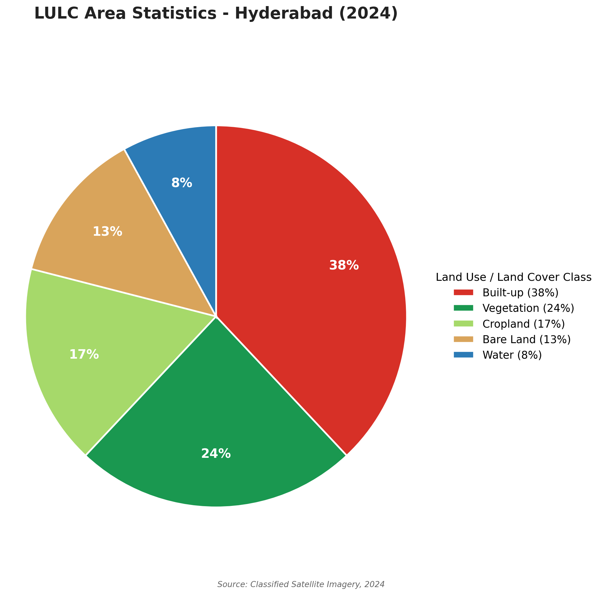

The Hyderabad LULC Satellite Data Explorer is an interactive geospatial application built to support Land Cover & Land Use Changing on Hyderabad. It visualizes land use and land cover classes across the Hyderabad metropolitan area for 2024, derived from classified satellite imagery.
Use the layer list inside the map to toggle between the classified LULC layer, the underlying satellite base composite, and any supporting indices or boundary layers included in the app. The LULC Statistics tab on this page summarizes the area share of each class as a pie chart.
Author: Moubani Dutta — M.Sc. in Geoinformatics, IEER
Objective: To map and analyze land cover and land use change across Hyderabad using classified satellite imagery for 2024.
AOI asset: projects/moubani-ee/assets/Hyderabad
Time period: 2024
| Layer | Source | Processing |
|---|---|---|
| Sentinel-2 True Colour | COPERNICUS/S2_SR_HARMONIZED | Cloud masking, median composite over 2024 |
| Classified LULC layer | Supervised classification (this project) | Five classes: Built-up, Vegetation, Cropland, Bare Land, Water |
| Study area boundary | Hyderabad (projects/moubani-ee/assets/Hyderabad) | Styled outline over all layers |
Class-wise share of total mapped area, computed from the classified LULC raster for the study area.

The LULC analysis of Hyderabad (2024) shows that Built-up land (38%) is the dominant land cover, indicating extensive urban development. Vegetation (24%) remains the second-largest class, providing important green spaces within and around the city. Cropland (17%) and Bare Land (13%) occupy moderate portions of the study area, while Water bodies (8%) represent the smallest share. Overall, the results highlight Hyderabad's urban expansion while emphasizing the importance of conserving vegetation and water resources for sustainable land management.